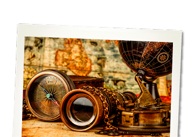

La historia
Saber cómo era la vida en otras épocas nos ayudará a entender mucho mejor nuestro presente y debería ser útil para no volver a repetir los mismos errores de nuestros antepasados.Guía del profesor
Recursos

00 - Refuerza tu aprendizaje: La historia: función y utilidad
Actividades sobre La historia: función y utilidad
02 - La cronología
Secuencia de imágenes que introduce los conceptos de "historia" y "cronología" y presenta distintas formas de medir el tiempo a lo largo de los siglos.
03 - Refuerza tu aprendizaje: Comprende cómo se realiza la datación histórica
Actividad con video para responder seis preguntas sobre el tema expuesto
04 - Las etapas de la historia
Secuencia de imágenes que permite situar en el tiempo las distintas etapas de la historia y conocer sus características principales

05 - Realiza un eje cronológico
Actividad que requiere ordenar cronológicamente hechos relevantes de los distintos periodos de la historia

06 - Refuerza tu aprendizaje: Las etapas de la historia
Actividades sobre La cronología

07 - El estudio del pasado
Actividades sobre El estudio del pasado
08 - Las fuentes artísticas
Secuencia de imágenes que ayudan a apreciar la información que nos aportan las obras de arte del pasado
09 - Las fuentes orales
Secuencia de imágenes que explica la importancia de la transmisión oral en el conocimiento del pasado

10 - Completa la definición de fuente oral
Actividad para completar un texto acerca de los diferentes tipos de fuentes orales
11 - Las fuentes audiovisuales
Secuencia de imágenes con audio que destaca el valor de las fuentes audiovisuales como recurso para el estudio de la historia
12 - Las fuentes escritas
Vídeo que permite apreciar la valiosa aportación que hacen los documentos escritos a la historia
13 - Asocia cada tipo de escritura a su soporte
Actividad que permite relacionar los principales tipos de escritura o lenguaje con su soporte y la época a la que pertenecen
15 - Reconoce tipos de restos arqueológicos
Actividad que propone reconocer algunos de los objetos que pueden encontrarse en una excavación arqueológica
16 - Las fuentes materiales
Vídeo que presenta cómo funciona una excavación arquelógica y cómo las fuentes materiales halladas ayudan a interpretar el pasado

17 - Refuerza tu aprendizaje: Las ciencias auxiliares de la historia
Actividades sobre Las ciencias auxiliares de la historia
18 - Competencias: análisis de las fuentes para el estudio del pasado
Actividad que propone el análisis del pasado de la propia comunidad a partir de una fuente histórica según el procedimiento sugerido

19 - Proyecto: estudio de testimonios orales y hechos históricos
Actividad que guía el trabajo colaborativo de investigación sobre el uso de las fuentes orales para el estudio de la historia del propio territorio